Usage of Impact
Impact - Impact can be run in two distincly different modes.
There is a complete GUI based environment avaliable where a solution
can be run from model to analysis. It is also possible to run the
solver isolated from command line.
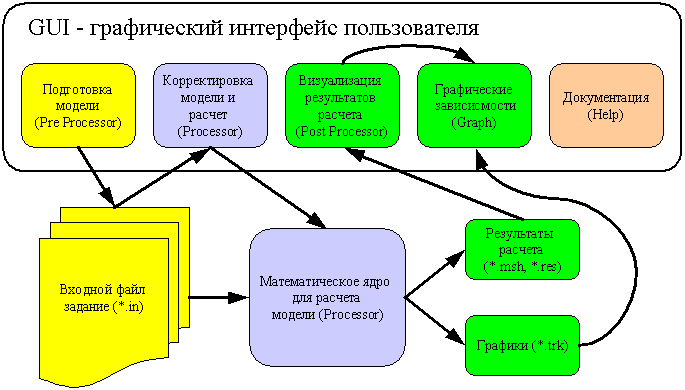
GUI Modules
The GUI is divided into separate modules which are described as follows
Pre Processor
Pre Processor is the starting point for the user. It is used
for:
- Creating geometry through the use of points, curves, surfaces and
volumes
- Creation of finite element models by meshing of curves, surfaces
and volumes
- Setting of loads and boundary conditions
- Setting of solver paramerer values such as time step etc.
- Exporting of .in files which is the indata file format for the
solver
Pre Processor operates on a full 3D view which can be zoomed and
rotated using the third mouse button either alone or in combination
with CTRL and/or SHIFT key.
On the left hand side is a tree structure of the elements in the model.
Elements can be selected here or in the 3D view directly.
By double clicking on a element, the properties of that element will be
displayed and can be updated in the lower left corner.
There are also a range of commands:
New - Starts a new model
Open - Opens a saved model
(.impact) or imports .nas (nastran), .stl or .in files
Save - Saves the model (.impact
for complete model or .in for solver model)
Zoom out - zooms out. This
can also be done by pressing mouse button and CTRL and move the mouse up
Zoom in - zooms in. This can
also be done by pressing moue button and CTRL and move the mouse down
 Top View
Top View
Bottom View
Left View
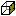 Right View
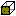 Front View
Back View
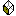 SW Isometric View
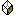 SE Isometric View
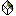 NE Isometric View
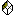 NW Isometric View
Properties - This button
allows the user to select run parameters for the .in solution file as
well as what should be visible on the screen. Examples include loads,
nodes, elements etc. To speed up the screen, deselect the ones you
don't need to see.
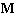 Material - Defines the
different material properties that are selectable
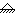 Constraints - Defines
the different constraints that are selectable
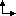 Loads - Defines the different
loads that are selectable
On the top left side is a selection menu of the Graphics mode.
Several options are available such as
Surface which displays a shaded model. Wireframe is
faster since no shading occurs.
Solid is used for completely shaded view.
Modelling principles
The preprocessor works with two types of graphical objects: Geometry
and Mesh. The geometry is CAD geometry but with build in mesh
attributes. A curve for example can have a mesh attached to it. It can
also have a material and a thickness which is automatically transferred
to the mesh.
To generate a model, the user should start with points and then create
curves based on these points. Finally, surfaces should be created based
on the curves. If a point is later moved, the curve based on this
points will change and finally the surface when the users presses the
rebuild model button.
By double clicking on a geometry, the attributes of that geometry will
appear on the edit field in the lower left corner. The user can change
any attribute and press update to modify the model. The mesh of a
surface is automatically based on the mesh of the curves which created
the surface. If the mesh is modified on a curve, the mesh on the
surface is also changed.
To create geometry there is a Draw tab available containing the
following commands:
Curve defining commands
Point - Creates a point at
a given location and optionally a complementing direction vector.
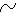 Nurb Curve - This creates
any curve from a line to a complex 3 degree curve with any number
control points.
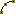 Arc - Creates an arc based on a
starting point, center point and a point to define the plane. Any angle
can be specificed including a negative. This makes the arc move in
opposite direction.
Surface defining commands
Tabulated surface - This
surface is created by dragging a profile curve along a spine curve. The
resulting surface will contain a rectangular mesh with the number of
elements per side defined through the profile and spine curve meshes.
Surface of revolving - Any
curve can be rotated about an axis defined by two points. The angle of
the rotation is defined in degrees (0-360). The mesh of the surface
will be defined by the mesh on the rotated curve and the specified mesh
size.
Ruled surface between curves
-
This creates a ruled surface between two edge curves of any shape. The
mesh size will set the size on the undefined edges. A switch is
available to revese the direction of curve 2 in the cases when the
surface becomes twisted.
Nurb Surface - Will create
a surface between four curves. The curves must be connected to form a
closed loop. One curve can have zero length in order to define a
3-sided surface.
Point and Curve generating
commands
Boundary generation -
Extracts
border points of a curve or boundary curves of a surface.
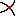 Intersection - Creates an
object at the intersection of two objects. For example, a point is
created at the intersection of two curves or at the intersection of a
curve through a surface. A curve is created as an intersection of
two surfaces.
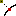 Project -
Projects an object onto another object. A point can be projected onto a
curve or a surface. A curve can be projected onto a surface. In all
cases, a vector can be used to project in a certain direction. If no
vector is available, the projection will be orthagonal to the curve or
surface.
Finite element direct
generating
commands
Node - Defines a node at a
given coordinate.
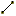 Elements with 2 nodes - Defines
a rod, spring or beam element between two nodes.
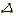 Elements with 3 nodes -
Defines a Contact_Triangle or Shell_CO_3 element between three nodes.
Elements with 4 nodes - Defines
a quad element between four nodes
Elements with 8 nodes -
Defines a solid element between eight nodes
A second tab, Modify, contains all the commande for modifying
one or several objects.
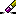 Erase - Deletes an object. Can
also be done by pressing the delete key on the keyboard.
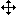 Move - Will move selected
objects a given distance. If only a point is to be moved it is easier
to double click on the point instead.
Rotate - Will rotate selected
objects around a point and axis.
Scale - Scales selected
objects from a point with a given factor.
Transform 4X4 - Transform
geometrically with a free 4x4 matrix for rotation and translation.
Materil for... - Will set
the material for selected objects. Can also be done by double clicking
on a surface or curve.
Constraints for... -
Will set the constraints for selected nodes.
Loads for... - Will set the
load condition for selected nodes or elements.
Grid - Will redefine the
support grid position and orientation
Processor
Processor The processor is where the calculation is made. It
consists of a prompt window where the solver printout is shown, an
editor where the indata file can be modified and a model viewer where
the model described by the .in file can be seen and rotated.
The starting point is a .in file which has been saved from the
preprocessor (or one written by hand). This must be loaded into
the processor by the open model button. The solution process is then
started by the start/stop button.
The results will automatically be written to a .flavia.res file which
can be loaded into the postprocessor.
Open model *.in - Opens a .in
file into the editor and prepares for solving.
Save - Saves the text in the
editor.
,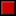 Start
/ Stop - Starts or stops a solution. The text in the editor is
automatically saved before the solution starts!
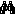 Find / Replace - Finds and / or
replaces the text in the editor. The user can also use CTRL+C, CTRL + X
or CTRL + V
Reload view - Will generate a
three dimensional view of the model
Number of CPU:s - Selects on how many CPU:s the solution
should be distributed. If the user has a multi core CPU, the solution
will be faster by setting this higher.
The view of the three dimensional model can be adjusted with these
commands:
Zoom out
Zoom in
Top View
Bottom View
Left View
Right View
Front View
Back View
SW Isometric View
SE Isometric View
NE Isometric View
NW Isometric View
Configure - This configures
what should be shown in the viewer.
Post Processor
Post Processor is used to view the results from the solver.
These are saved in a file ending with .flavia.res and consists of
multiple time steps which can be selected on the left hand side of the
viewer. This is also where you can decide what should be viewed.
Open *.res - loads the result
file into the postprocessor for viewing
Save image - Saves a screen
dump of the current view as a .PNG file
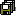 Save images - Saves all time
steps as .PNG files
Show/Hide - Select the elements
to be hidden and press this button. Pressing with no selection will
shift view to hide mode.
Zoom out
Zoom in
Top View
Bottom View
Left View
Right View
Front View
Back View
SW Isometric View
SE Isometric View
NE Isometric View
NW Isometric View
To the left of the view, there is a menu to control what is to be shown
Show - This menu contains the following commands:
Mesh - Selects if the mesh is to be shown.
Deformed - Shows the elements in the deformed state
Contur fill – Will show the element results as colour fields
on the mesh
Gradient - Another way to show element results
Nodes label - Will show all node numbers
Elements label - Will show all element numbers
Gradient Result - Will smooth the element results across
element boundaries
Result - This is where the type of element results are selected.
The user can select element stresses or strains of various types.
Time step - Just on click on the time step to be shown. Try
holding down the mouse button and move up/down for animation.
Graph
Graph The grapher is used to view the results from trackers or
directly from elements as curves.
Кнопочное меню.
New - Will create a new curve by
extracting results directly from the solution. By selecting
displacements, the node displacements as a function of time is plotted.
Strains and stresses are extracted from element as a function of time.
Note that the results must have been loaded into the postprocessor
module first for this command to work.
Open - Will create a curve based
on results written in a tracker file (.trk). For how to create tracker
files, read the solver command reference.
Remove - deletes a curve. Select
the curve in the top left table before pressing this button.
Union - объединяет выбранные
графыки.
Save image - Saves a screen
dump of the current view.
Save All - Will save
pictures of all curves including data values and construct a .html page
for explanation.
Help
This is the tab to use for documentation.
Solving problems with impact:
The solution process is made in three stages:
- Creation of a model using a Pre Processor or direct
writing of the Fembic indata file
- Solution using the Impact program
- Presentation of the results using a Post Processor and
the result files from the solution
It is simplest to run Impact and the built in Pre/Post Processors
from the GUI. To do that, just run the ImpactGUI.bat file in this
directory if you are a Windows user
or make the ImpactGUI.sh runnable (chmod 777 ImpactGUI.sh) and run that
with ./ImpactGUI if you are a Linux/Unix/Mac user.
Alternatively, just write bash ImpactGUI.sh to start.
Preparation of model
Impact supports a range of Pre/Post Processors. The GUI actually
contains a fully
functional Post Processors with a Pre Processor under
construction. To design models, you have
two additional choises. Gmsh, which is completely free and
unlimited; GID which is commersial
but can be run for free under a limited academic license.
Should you want to try GID, you will need to download a
version later than
6.2 since Impact uses features that are currently being implemented.
You can download GID from
http://gid.cimne.upc.es
This is how you should set up and use GID for Pre Processing:
- Run the installation file for GID and install the program.
- If you haven't installed Impact, proceed to do this.
- Look in the GID directory for a subdirectory called problemtypes
and go there
- Make a new subdirectory called Impact
- Now copy the directory Impact.gid from where you installed
Impact, making sure all files come with it (you will find this
directory under the Interfaces directory)
- The directory structure should now be
GiD/problemtypes/Impact/Impact.gid/some files
- If you now start GiD, you should find Impact as an option under
the DATA menu.
- Start by selecting Impact as your solver by
Data->Problemtype->Impact->Impact
- Fill in the problem datas under Data->Problem Data->...
- Create a model and mesh it (read the GiD manual for how to do
this)
- Set materials on all elements using Data->Materials
- Set boundary conditions on the nodes using Data->Conditions
- GiD can now export indata files to Impact via the
File->Export->CalculationFile menu
This is how you should set up and use Gmsh for Preprocessing:
- Download Gmsh from
http://www.geuz.org/gmsh and install.
- If you haven't installed Impact, proceed to do this.
- Create models in Gmsh and save them in format 1.0 of gmsh mesh
format
- Import the .msh file into the Impact processor editor. It will
then be translated.
Solving of model
The solution of the problem is initiated from the GUI by loading the
file into the editor and pressing the play button. You can
also write java -Xmx500m run.Impact file at the command
prompt, where file is the name of the indata file and
500m represents
allocation of 500 Megabytes of memory. If you have less you can reduce
this
amount with the risk of getting out of memory errors for large models.
In the case of loading a Fembic file, make sure it ends
with .in because otherwise Impact will not recognise the format. It is
also important that you are placed in the impact directory at the time
of execution.
If you are running some of the example problems supplied, you need
to add the path to the examples directory. The syntax then becomes: java
run.Impact -Xmx500m examples/file where file applies as above.
If all goes well, you should now see the indata file being parsed by
impact and the solution process initiated. Each time results are
written,
a notice will be written to the screen and you will see that execution
is
in progress. A solution can take considerable time, so be patient.
Visualization of results of
calculation
The results are printed to the flavia.res and flavia.msh files. They
will end up in the same directory as your sourcefile. These are tailor
made for the internal Post Processor, but are also readable
from the GID Post Processor
If you want to view the results with the internal Post Processor,
just swith
to the Post Processor tab and load the .flavia.res file. The
model should now
show up on the screen. Rotation, moving and zooming is done by holding
down any of the mouse buttons while moving the mouse.
If you want to use GiD as a viewer, start by firing up GID and
switch to Post Processing mode. Next read in the result file
flavia.res. The mesh (flavia.msh) file will be read automatically. You
should now see the model on the screen.
Press ctrl-d to set the timestep for deformation. Go from the top of
the menu, starting by selecting deformation and then time analysis.
Select
timestep 0, magnification factor 1.0 and then press apply.
Next press ctrl-v and select the results , time analysis and contour
fill. Finally, select gausspointstress and apply.
Finally, press ctrl-m. You should now see the results as an
animation. There are plenty of ways to view your results, but I refer
to the GID users manual for that.
Summary of how you should use GiD for Post Processing (looking at
the results)
- Fire up GID and switch to Post Processing mode.
- Open the xxxxx.in.flavia.res
file. If all goes well, you should be able to see your model.
- Press ctrl-d to set the timestep for deformation.
- Go from the top of the menu, starting by selecting deformation
and then
time analysis.
- Select timestep 0,
magnification factor 1.0 and then press apply.
- Next press ctrl-v and select the results , time analysis and
contour fill.
- Finally, select gausspointstress and apply.
- Next press ctrl-m to get a nice animation!
Impact Cluster Implementation
As of version 0.5.3, Impact supports calculations performed across a
networked set of clients often referred to as a cluster. This allows
Impact to split up a model into smaller parts and distribute them over
the network, letting a client calculate only a unique section of the
model and thereby speeding up the calculation. There is no need to have
a special type of network although a capacity of 100Mbit or greater is
preferrable. This is standard today on most PC:s.
The network communication and synchronisation is a complex topic.
Therefore, Impact uses a special software to handle all this, called
JavaParty. Developed by the University of Karlsruhe this software is
100%PC% java in itself which means no further dependencies.
Furthermore, JavaParty assumes there is a way to connect from one
client to another without a password. Default setup uses ssh (secure
shell) login and how to set this up correctly is explained at the
JavaParty webpage. A link to JavaParty as well as downloads is
avalilable on the Impact webpage
Impact assumes that your directory is shared across the clients in
the network. This is the most common setup on a LAN and is accomplished
by NFS or similar. If this is not the case, you have to arrange this
with the system administrator. Reason for this assumption is that the
printout of the results become significantly simpler to implement since
all the clients can access the same file.
For more details on the cluster implementation, see the programmers
manual
Contact handling in Impact
Contacts in impact are handled by two element types:
- Contact_Triangle (CT)
- Contact_Line (CL)
The CT is used to sense contact between nodes and surfaces and the
CL senses contact against other CL elements. Together, these two
elements can be used to enable contact detection for most cases and
models. Both of them are classified as elements which means that they
can directly be part of a model mesh as all elements. The user can for
example model a wall or a complex rigid contact surface with them.
Since they only have the sole purpose of sensing contact, the have
no stiffness at all. This means that if they are used on their own in
the model, the nodes connecting them should be fixed by constraints to
prevent them from drifting when in contact. It also means that the user
can use them in combination with ordinary elements to provide contact
sensing where this is not default.
One example where this is useful is when a body has been meshed
using solid elements, for example an engine block in a car. This body
can then be "dressed" on the outside with a second mesh of contact
elements to provide the contact sensitivity against other elements in
the car. Any contact sensing inside the engine block is not needed and
valuable calculation time can then be saved with this approach.
Some elements have contact sensing as default. Examples of these
are:
- Shell_C0_3
- Shell_BT_4
- Rod_2
- Beam_2
When any of these elements is created, one or several contact
elements are created by default. These are embedded inside the element
and share the element nodes. The rod and beam elements use the
Contact_Line element to sense contact. The Shell elements use the
Contact_Triangle element to sense contact against the surface and
optionally Contact_Line elements at the edges to sense contact against
other edges.
The contact elements drain quite a bit of computing resources and
as the number of elements increase, so does the amount of computing
power since the increase is more than linear. Therefore, some of the
elements have options to reduce the contact resolution. This means that
the contact sensing will be less accurate during large deformation of
the elements, but the solution will run faster. For this reason,
contact sensing has also not been implemented in the solid elements
since the user can best minimise the amount of calculations needed, by
distributing the contact element where they are needed.
The details of how contact sensing is implemented is explained in
the programming manual.